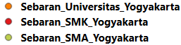
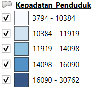

Kota Yogyakarta
Kota Yogyakarta berkedudukan sebagai ibukota Propinsi DIY dan merupakan satu-satunya daerah tingkat II yang berstatus Kota di samping 4 daerah tingkat II lainnya yang berstatus Kabupaten yaitu Kabupaten Sleman, Kabupaten Bantul, Kabupaten Kulon Progo, dan Kabupaten Gunung Kidul.
Read MorePendidikan
Termasuk partisipasi pendidikan, buta huruf, lembaga dan sistem pendidikan, sumber daya manusia dan keuangan yang diinvestasikan dalam pendidikan, pembelajaran seumur hidup, pelatihan kejuruan dan pembelajaran orang dewasa, dampak pendidikan, penilaian kinerja siswa, dll.
Read MoreKependudukan
Mencakup pekerjaan dalam statistik populasi dan demografis, topik seperti demografi, statistik vital, struktur dan pertumbuhan populasi, proyeksi demografis, keluarga dan rumah tangga (perkawinan, perceraian, ukuran rumah tangga), migrasi, pengungsi, dan pencari suaka.
Read MoreBatas Administrasi Kota Yogyakarta
Kota Yogyakarta berkedudukan sebagai ibukota Propinsi DIY dan merupakan satu-satunya daerah tingkat II yang berstatus Kota di samping 4 daerah tingkat II lainnya yang berstatus Kabupaten.
- Kota Yogyakarta terletak ditengah-tengah Propinsi DIY, dengan batas-batas wilayah sebagai berikut :
- Sebelah utara : Kabupaten Sleman
- Sebelah timur : Kabupaten Bantul & Sleman
- Sebelah selatan : Kabupaten Bantul
- Sebelah barat : Kabupaten Bantul & Sleman
Kota Yogyakarta merupakan ibukota Provinsi Daerah Istimewa Yogyakarta. Kota Yogyakarta memiliki luas wilayah kurang lebih 32,82 km2 atau 1,03% dari luas wilayah Provinsi Daerah Istimewa Yogyakarta.
Analisis Persebaran Fasilitas Pendidikan terhadap Kepadatan Penduduk di Kota Yogyakarta
Kota Yogyakarta merupakan kota yang memiliki tingkat kepadatan penduduk dengan angka 12.664 penduduk/km2. Tingginya kepadatan penduduk harus diimbangi dengan pelayanan sarana prasarana termasuk keterjangkauan terhadap fasilitas pendidikan dimana yang digunakan dalam penelitian ini adalah sekolah SMA, SMK, dan universitas.
Latar Belakang
Pendidikan merupakan salah satu upaya dalam mewujudkan sumber daya manusia yang berkualitas. Ketersediaan fasilitas pendidikan yang mumpuni dan mudah diakses menjadi hal yang penting untuk diperhatikan sehingga terciptanya peluang pemerataan pendidikan di seluruh lapisan masyarakat. Sesuai dengan UU No. 20 Tahun 2003 tentang Sistem Pendidikan Nasional Pasal 6 Ayat (1), disebutkan bahwa setiap warga negara indonesia diwajibkan untuk menempuh pendidikan wajib belajar 12 tahun, mulai dari jenjang SD hingga SMA.
Kota Yogyakarta yang dikenal sebagai Kota Pendidikan memiliki dinamika dalam memenuhi pelayanan pendidikan. Wilayahnya yang cukup padat penduduk dengan mobilitas tinggi, menjadikan isu persebaran dan keterjangkauan fasilitas pendidikan SMA penting untuk diteliti. Distribusi dan keterjangkauan tidak hanya dilithat pada keberadaan sekolah, tetapi juga pada akses yang dipengatuhi jarak dan waktu. Apabila terjadi ketimpangan dalam aksesibilitas dapat menghambat pemerataan pendidikan dan berpotensi menimbulkan kesenjangan sosial di masyarakat.
Distribusi Titik Fasilitas Pendidikan Kota Yogyakarta
Peta di samping memberikan gambaran distribusi lembaga-lembaga pendidikan untuk ketiga jenjang.
Digunakan simbolisasi titik agar lokasi dari lembaga lebih terlihat oleh pembaca peta. Pada peta jenjang pendidikan dibedakan melalui penggunaan warna simbol titik, dimana jenjang sekolah menengah atas disimbolkan dengan titik warna hijau, jenjang sekolah menengah kejuruan disimbolkan dengan titik warna merah, dan universitas disimbolkan dengan titik warna oranye.
Kepadatan Penduduk Kota Yogyakarta
Peta di samping memberikan gambaran rasio kepadatan penduduk per kecamatan.
Digunakan simbolisasi polygon agar lokasi dari lembaga lebih terlihat oleh pembaca peta. Pada peta jenjang pendidikan dibedakan melalui penggunaan warna simbol polygon, dimana:
Ketersediaan Fasilitas Pendidikan terhadap Kepadatan Penduduk
Peta di samping memberikan gambaran rasio kepadatan penduduk per kecamatan beserta persebaran fasilitas pendidikan.
Fasilitas Pendidikan cenderung terkonsentrasi di pusat kota (Kecamatan Gondokusuman, Jetis). Sedangkan, wilayah pinggiran seperti Ngampilan dan Wirobrajan memiliki kepadatan penduduk tinggi tetapi minim fasilitas pendidikan.